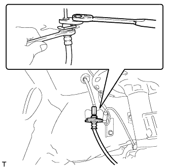
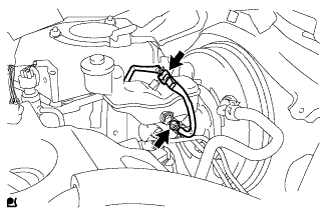
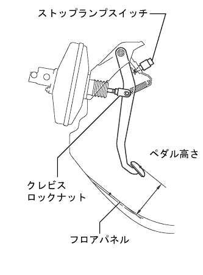
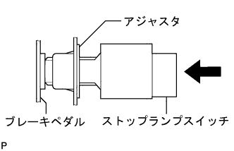
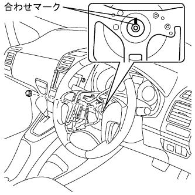

Brake Booster Assembly (Engine Type 2AZ-FE) Installation |
| 1. Install Brake Booster Assembly |
Install a new brake booster gasket to the brake booster assembly.
 |
Install the brake booster assembly with the 4 nuts.
| 2. Install Camshaft Timing Oil Control Valve Assembly |
 |
Install the camshaft timing control valve assembly with the bolt.
| 3. Connect Brake Tube |
 |
Using a union nut wrench (10mm), connect the 2 brake tubes to the brake actuator.
 |
Using a union nut wrench (10mm), connect the front brake flexible hose No.1 (RH side) to the brake tube.
 |
Install the brake tube to the body with the 2 new clamps.
| 4. Connect Check Valve to Connector Tube Hose |
 |
Connect the check valve to connector tube hose to the brake booster assembly and secure it with the clip.
| 5. Temporarily Tighten Brake Master Cylinder Push Rod Clevis |
Temporarily install the brake master cylinder push rod clevis with the lock nut.
| 6. Connect Brake Master Cylinder Push Rod Clevis |
 |
Apply MP grease No.2 to the brake master cylinder push rod clevis.
Connect the brake master cylinder push rod clevis to the brake pedal with the push rod clevis pin.
Install a new clip to the push rod clevis pin.
| 7. Install Brake Pedal Return Spring |
 |
Install the brake pedal return spring to the brake pedal support.
| 8. Install Brake Master Cylinder Sub-assembly |
Install a new O-ring to the brake master cylinder assembly.
 |
Insert the brake master cylinder assembly into the brake booster assembly, and install the brake master cylinder assembly with the 2 nuts.
 |
Using a union nut wrench (10mm), connect the 2 brake tubes to the brake master cylinder assembly.
 |
Connect the warning switch connector to the reservoir and engage the clamp.
| 9. Install Cowl Top Panel Outer |
 |
Install the cowl top panel outer with the 8 bolts.
 |
Bend the heater air duct splash shield seal No.2 and water guard plate RH as shown in the illustration, and engage each clamp.
 |
Engage the windshield deicer wire harness connector and 3 clamps, and attach them to the cowl top panel outer. (w/ Cold Area Specification)
| 10. Install Cowl Body Mounting Reinforcement RH |
 |
Install the cowl body mounting reinforcement RH to the cowl top panel outer with the 3 bolts.
| 11. Install Windshield Wiper Motor & Link Assembly |
 |
Install the windshield wiper motor & link assembly with the 2 bolts.
Connect the connector.
| 12. Install Cowl Top Ventilator Louver RH |
 |
Engage the 5 claws and install the cowl top ventilator louver RH as shown in the illustration.
| 13. Install Front Side Panel Protector NO.1 RH |
 |
Engage the pin and install the front side panel protector NO.1 RH.
| 14. Install Cowl Top Ventilator Louver LH |
 |
Engage the 11 claws and install the cowl top ventilator louver LH as shown in the illustration.
| 15. Install Front Side Panel Protector NO.1 LH |
 |
Engage the pin and install the front side panel protector NO.1 LH.
| 16. Install Hood to Cowl Top Seal |
 |
Engage the 7 clips and install the hood to cowl top seal.
| 17. Connect Battery Negative Terminal |
| 18. Install Front Wiper Arm & Blade Assembly LH |
 |
Stop the windshield wiper motor assembly at the automatic stop position.
Using a round file or equivalent, clean the wiper arm serrations. (When reassembling)
Using a wire brush, clean the wiper pivot serrations.
 |
Install the front wiper arm & blade assembly LH with the front wiper arm nut so that it is in the position shown in the illustration.
| 19. Install Front Wiper Arm & Blade Assembly RH |
 |
Using a round file or equivalent, clean the wiper arm serrations. (When reassembling)
Using a wire brush, clean the wiper pivot serrations.
 |
Install the front wiper arm & blade assembly RH with the front wiper arm nut so that it is in the position shown in the illustration.
Operate the front wipers while spraying water or washer fluid on the glass, and check the wiping condition of the blades and that they do not interfere with the body.
| 20. Install Front Wiper Arm Head Cap |
 |
Install the 2 front wiper arm head caps.
| 21. Setting Procedure When Disconnecting/Reconnecting Battery Terminal |
)| 22. Fill Brake Fluid |
 |
Stand the brake fluid can upside down over the reservoir.
| 23. Bleed Brake Master Cylinder Assembly |
 |
Using a union nut wrench (10mm), disconnect the 2 brake tubes from the master cylinder.
 |
Slowly depress the brake pedal and hold it.
 |
Block the tube holes with your fingers and release the brake pedal.
Remove your fingers, slowly depress and hold the brake pedal, block the tube holes again and release the brake pedal; repeat this 3 or 4 times.
|
Using a union nut wrench (10mm), connect the 2 brake tubes to the master cylinder assembly.
| 24. Bleed Brake Line |
Connect a vinyl tube to the bleeder plug.
Depress the brake pedal several times, and loosen the bleeder plug with the brake pedal depressed. (*1)
When fluid stops coming out, tighten the bleeder plug and release the brake pedal. (*2)
Repeat (*1) to (*2) until there is no air in the brake fluid.
Bleed the air from the brake line of each wheel in the same way.
| 25. Bleed ABS & Traction Actuator Assembly |
Turn the IG OFF and depress the brake pedal 20 times or more.
With the IG still OFF, connect the SST (TaSCAN) to DLC3.
Turn IG ON.
Turn the SST (TaSCAN) power switch ON, select "Menu (Work Support)" → "ABS/VSC/ECB" → "Air Bleeding" and execute it.
Bleed Actuator Intake System
On the SST (TaSCAN) menu screen, select intake system bleeding and execute it.
Loosen the bleeder plug of the right front wheel. (*1)
Operate the SST (TaSCAN) to operate the actuator.
Check on the SST (TaSCAN) screen that operation has stopped.
Temporarily tighten the bleeder plug. (*2)
Repeat the procedure from (*1) to (*2) until the air is completely bled.
Tighten the bleeder plug.
Perform the same procedure for the right rear wheel as for the right front wheel.
Bleed Actuator Pressure Reduction System
Execute pressure reduction system bleeding on the SST (TaSCAN) menu screen.
Loosen the bleeder plug of the right front wheel. (*3)
Operate the actuator using the SST (TaSCAN), and at the same time fully depress the brake pedal and hold it.
Tighten the bleeder plug and release the brake pedal. (*4)
Repeat the procedure from (*3) to (*4) until the air is completely bled.
Tighten the bleeder plug.
Perform the same procedure for the other 3 wheels as for the right front wheel.
Perform normal brake line bleeding again by pumping the brake pedal.
| 26. Inspect Brake Fluid Level |
Check the brake fluid level, and add fluid up to the MAX line of the reservoir if necessary.
| 27. Install Brake Master Cylinder Reservoir Strainer |
| 28. Install Brake Master Cylinder Reservoir Filler Cap Assembly |
| 29. Disconnect Battery Negative Terminal |
)| 30. Install Engine Cover Sub-assembly NO.1 |
 |
Install the engine cover assembly No.1 with the 2 nuts.
| 31. Inspect and Adjust Brake Pedal Height |
 |
Inspect brake pedal height
Turn back the carpet.
Turn back the dash silencer from the slit in the dash silencer.
Measure the shortest distance from the brake pedal pad surface to the floor panel.
Adjust brake pedal height
Disconnect the connector from the stop light switch.
Loosen the clevis lock nut and turn the push rod to adjust the pedal height.
Tighten the clevis lock nut.
 |
Insert the stop light switch into the adjuster until the stop light switch contacts the brake.
 |
Turn the stop light switch approximately 1/4 turn clockwise.
Connect the connector to the stop light switch.
Check the shaft protrusion.
Check that the stop lights do not illuminate when the brake pedal is not depressed.
| 32. Inspect Brake Pedal Free Play |
Stop the engine and depress the brake pedal several times until there is no more vacuum left in the brake booster.
Inspect the brake pedal free play.
If the free play is 1mm or less, check the shaft protrusion of the stop light switch assembly.
| 33. Inspect Brake Pedal Reserve Distance |
Inspect the brake pedal reserve distance.
| 34. Install Steering Column Cover |
 |
Engage the 2 claws and pins, and install the steering column cover (upper side).
 |
Engage the 2 claws and install the steering column cover (lower side).
 |
Engage the 4 claws.
 |
Engage the claws.
| 35. Install Steering Wheel Assembly |
 |
Align the matchmarks and install the steering wheel assembly to the steering column assembly.
Install the nut.
Connect each connector to the spiral cable.
| 36. Install Horn Button Assembly |
 |
Connect the horn connector to the horn button assembly.
Connect the airbag connector to the horn button assembly and lock it securely.
 |
Using a torx socket wrench (T30), install the horn button assembly to the steering wheel assembly with the 2 torx bolts.
| 37. Install Steering Wheel Cover Lower NO.3 |
 |
Engage the claws and install the steering wheel cover lower No.3.
| 38. Install Steering Wheel Cover Lower NO.2 |
 |
Engage the claws and install the steering wheel cover lower No.2.
| 39. Install Instrument Panel Under Cover Sub-assembly NO.1 |
| 40. Install Instrument Panel Airbag Assembly LWR NO.1 |
 |
Connect the connector to the instrument lower airbag No.1.
 |
Install the instrument lower airbag No.1 with the 6 claws and 2 guides.
 |
Install the instrument lower airbag No.1 with the 4 bolts.
| 41. Connect Battery Negative Terminal |
| 42. Inspect Airbag Warning Light |
)| 43. Setting Procedure When Disconnecting/Reconnecting Battery Terminal |
)